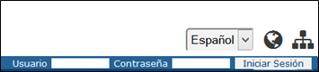

La Barra de Accesibilidad (común a todas las aplicaciones del GeoPortal) permite definir los siguientes parámetros:

Barra de accesibilidad
El Panel de Administración Metadatos solo es visible y accesible por usuarios autenticados, después la inserción de una contraseña propia, y autorizados, con el rol de Administrador de Metadatos y se muestra como pestaña (Administración) en la Barra de Informaciones sobre la aplicación.